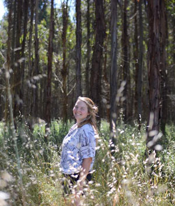

About Julie
Julie is a video, print, and graphic journalist living in Albany, New York. Her interests include public transportation, science research, and mental health awareness.
She enjoys spending time outdoors hiking, biking, and camping. She hopes to work in trail management and land conservation and to work with youth outdoors.